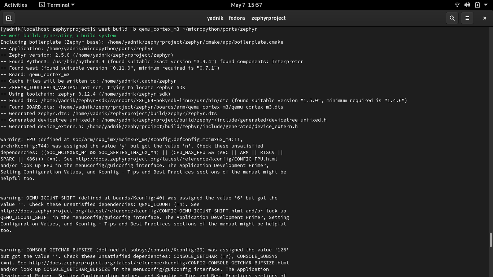
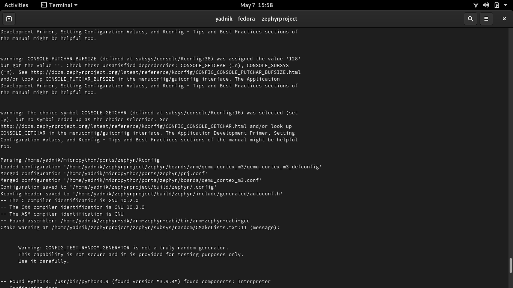
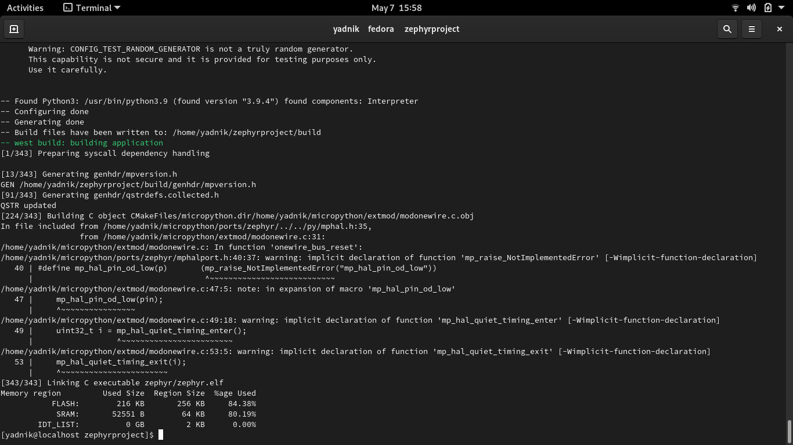

The BeagleConnect Freedom
BeagleConnect is a revolutionary technology which eliminates low-level
software development for IoT and IIoT applications, such as building
automation, factory automation, and home automation. What sets it apart
is that it eliminates the need of relying on software libraries enabling
it to be used for interfacing a greater number of sensors, actuators and
indicators for communicating over various networks compared to other
conventional solutions. This can be achieved since it is built with
fully open source software with submissions to mainline Linux and Zephyr
repositories to aide in support and porting.
BeagleConnect Freedom wireless hardware is based on the TI CC1352 and is
multiprotocol and multi-band Sub-1 GHz and 2.4-GHz wireless
microcontroller (MCU).The first available BeagleConnect solution.
BeagleConnect currently has Greybus support which is an application
layer protocol that can be described as a bus transport, in that it
conveys bus-specific messages back and forth between Linux and a
connected device.
The motive of this project is to port MicroPython and CircuitPython to
the firmware to be flashed on the BeagleConnect Freedom as well as
writing MicroPython drivers for the the BeagleConnect Platform. In this
Blog we will explore the building process for the Zephyr RTOS which
basically one step prior to the process of flashing it on the hardware.
What is MicroPython?
MicroPython is a lean and efficient implementation of the Python 3
programming language that includes a small subset of the Python standard
library and is optimised to run on microcontrollers and in constrained
environments.
Features supported by the MicroPython Port to Zephyr RTOS are:
- REPL (interactive prompt) over Zephyr UART console.
- utime module for time measurements and delays.
- machine.Pin class for GPIO control, with IRQ support.
- machine.I2C class for I2C control.
- usocket module for networking (IPv4/IPv6).
-
"Frozen modules" support to allow to bundle Python modules together
with firmware. Including complete applications, including with
run-on-boot capability.
-
virtual filesystem with FAT and littlefs formats, backed by either
DiskAccess or FlashArea (flash map).
Setting up Zephyr RTOS
I have used the fedora distribution and will be sharing commands for the
same. However documentation and support is available for Ubuntu, Fedora,
Clear Linux, Arch Linux along with Windows and macOS.
The following steps need to be followed. I have shared the respective
commands for the corresponding steps.
-
Update Your Operating System:
Ensure your host system is up to
date.
$ sudo dnf upgrade
-
Install Requirements and Dependencies:
Note that both Ninja and
Make are installed with these instructions; However we will need only
one.
-
$ sudo dnf group install "Development Tools" "C Development Tools
and Libraries"
-
$ dnf install git cmake ninja-build gperf ccache dfu-util dtc wget
\ python3-pip python3-tkinter xz file glibc-devel.i686
libstdc++-devel.i686 python38 \ SDL2-devel
-
Install CMake:
CMake version 3.13.1 or higher is required.
Download and install a packaged cmake from the CMake project site.
$ cd ~
$ wget
https://github.com/Kitware/CMake/releases/download/v3.15.3/cmake-3.15.3-Linux-x86_64.sh
$ chmod +x cmake-3.15.3-Linux-x86_64.sh
$ sudo ./cmake-3.15.3-Linux-x86_64.sh --skip-license
--prefix=/usr/local
$ hash -r
-
Install the Zephyr Software Development Kit (SDK):
Use of the
Zephyr SDK is optional, but recommended. Some of the dependencies
installed above are only needed for installing the SDK.
Zephyr’s
SDK contains all necessary tools to build Zephyr on all supported
architectures.
Additionally, it includes host tools such as
custom QEMU binaries and a host compiler.
Download the
latest SDK
as a self-extracting installation binary:
$ wget
https://github.com/zephyrproject-rtos/sdk-ng/releases/download/v0.12.4/zephyr-sdk-0.12.4-x86_64-linux-setup.run
Run the installation binary, installing the SDK at
~/zephyr-sdk-0.12.4
$ cd <sdk download directory>
$
chmod +x zephyr-sdk-0.12.4-x86_64-linux-setup.run
$
./zephyr-sdk-0.12.4-x86_64-linux-setup.run -- -d
~/zephyr-sdk-0.12.4
We are now done with setup and installation
process.
QEMU
QEMU is a generic and open source machine emulator and virtualizer.
When used as a machine emulator, QEMU can run OSes and programs made for
one machine (e.g. an ARM board) on a different machine (e.g. your own
PC). By using dynamic translation, it achieves very good performance.
We will be also using it for running the Zephyr RTOS and building
MicroPython for the ARM Architecture on our x86 machine which can be
later flashed on our actual hardware.
Building port on Zephyr RTOS
We don't have to redo the Zephyr installation, we have to just switch from
master to a tagged release, we can instead do:
$ cd
zephyrproject/zephyr
$ git checkout v2.5.0
$ west update
Once
Zephyr is installed we may then need to configure your environment, for
example by sourcing zephyrproject/zephyr/zephyr-env.sh
Once Zephyr is
ready to use we can build the MicroPython port.
We will first have to
clone the MicroPython repository into our home directory using :
$
Git clone
https://github.com/micropython/micropythonTo build for QEMU we finally run
$ west build -b qemu_cortex_m3 ~/micropython/ports/zephyr
Once the
port has been built successfully the resulting firmware is flashed to the
BeagleConnect Freedom Board. A successful build looks as follows:


